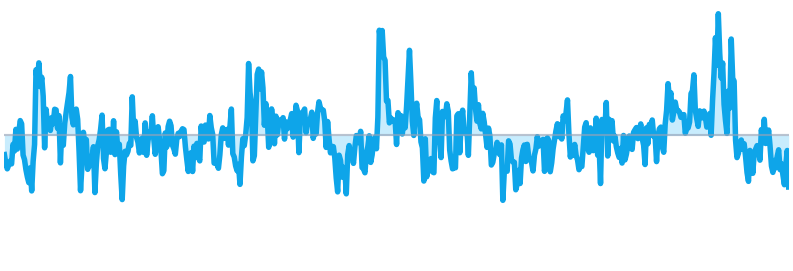
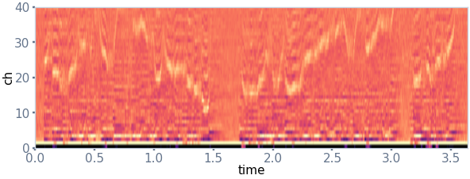
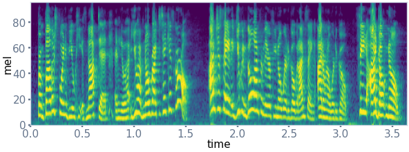
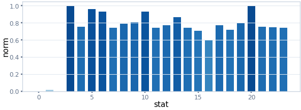
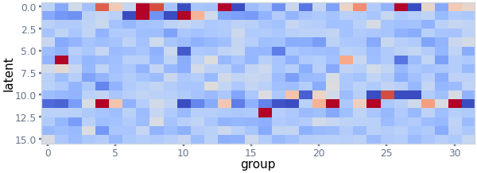

Final Benchmark Model: Acoustic-Text Bridge Fusion for Emotion + VAD
Static architecture board adapted from the live Processing tab: 06D acoustic evidence, transcript tokens, bridge cross-attention, balanced fusion, and two task heads.
Group 11 IEMOCAP benchmark
01 Input package
WAV audio
recorded or uploaded waveform

Script / timestamp
00:00.0 - 00:03.6
I do not know what happened, but I need to explain it clearly.
sample transcript / ASR text
02 Acoustic 4-branch feature block
Raw waveform -> 06D acoustic features
TemporalSpectralStatsE2V

X_temporalMFCC, delta, delta-delta, RMS, ZCR, pitch/F0, spectral LLD

X_spectrallog-Mel, delta log-Mel, delta-delta log-Mel

X_statsmean, std, min, max, median, percentile, IQR

X_e2vpretrained speech emotion embedding
Temporal13 LLD
Spectral40 Mel
Stats13 func.
E2V768-d
03 Acoustic encoders
Branch tokens -> acoustic token set
1D-CNN / TCNtemporal prosody dynamics
2D-CNNtime-frequency pattern maps
Stats MLPglobal clip-level descriptors
E2V adapterspeech emotion prior
04 Acoustic self-attention
Acoustic tokens exchange evidence
SelfAttn([z_temporal, z_spectral, z_stats, z_e2v])
this happens after four branch encoders emit tokens
Text branch
Transcript -> pretrained text tokens
Transcript
Tokenizer
RoBERTa encoder
Projection
Self-attention
Text tokens provide lexical context; acoustic tokens preserve how the sentence was spoken.
05 Bridge cross-attention
Controlled meeting point
Bridge A -> TQ from bridge/acoustic, K/V from text tokens
Bridge T -> AQ from bridge/text, K/V from acoustic tokens
Balanced expert fusioncombines acoustic evidence and transcript evidence
06 Heads
Emotion + VAD
Emotion classifier
softmax: neutral, happy/excited, sad, angry
VAD regressor
valence, arousal, dominance
Best benchmark profile: Expert-Level Acoustic-Text Fusion, 10-fold WA 74.02 / UAR 74.64 / Macro-F1 74.05 / CCC mean 0.661